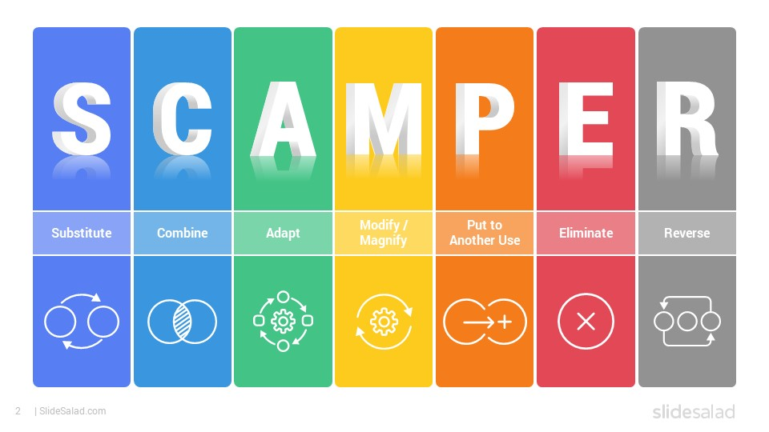

Ideation
I generate original angles quickly and connect ideas others might miss.
My strengths shape how I approach product challenges, collaborate with teams, and keep execution aligned with user needs.
I generate original angles quickly and connect ideas others might miss.
I visualize possibilities clearly and motivate action through future-focused narratives.
I test assumptions with data, patterns, and underlying cause-effect relationships.
I trust my judgement, stay accountable, and maintain momentum under uncertainty.
I speak directly, clarify hard issues, and help teams move toward resolution.
Methods that guide my process from insight to iteration.
I learned this framework in CM-ADMT and used it to create and test prototypes through empathy, ideation, and feedback cycles.

SCAMPER helps me challenge defaults and rework ideas through substitution, adaptation, modification, and other provocations.
2
4
4
5